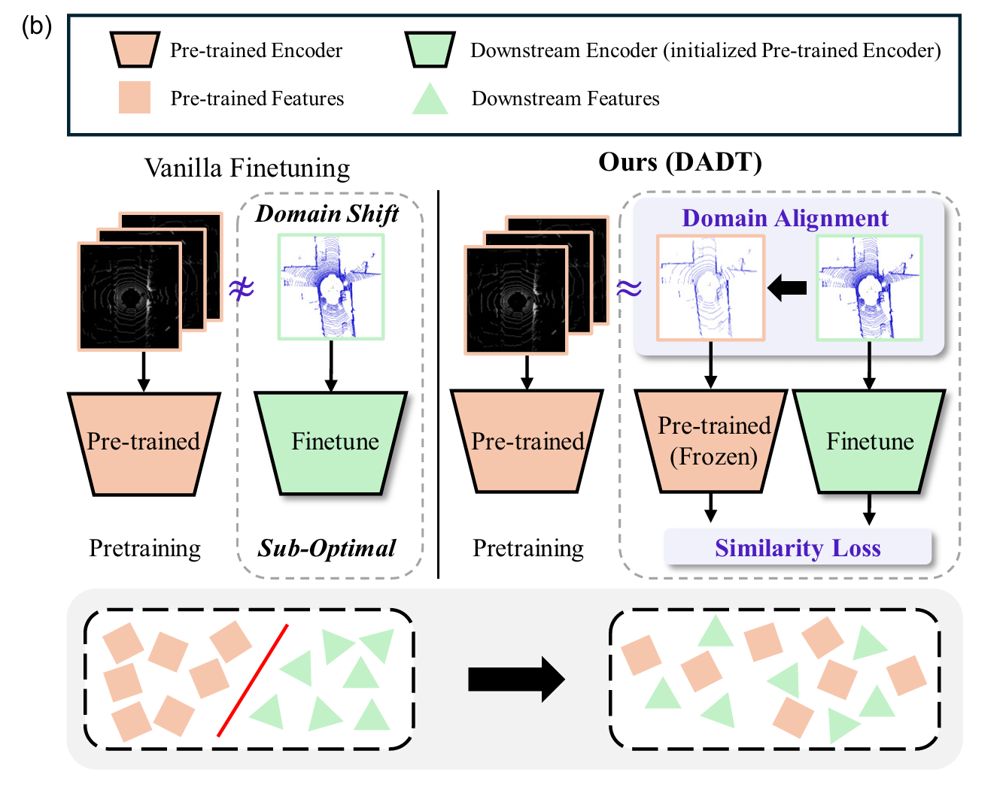

|
Jiyun Jang
I am an undergraduate student in Computer Science & Engineering, at Korea University.
I have done a research internship at VAI Lab in Korea University with Professor Jinkyu Kim.
I will be joining the RIRO Lab at the Korea Advanced Institute of Science and Technology (KAIST) as an intern with Professor Daehyung Park.
My research interests include Perception based Task & Motion planning, Reinforcement Learning, Natural Language grounding for Human Robot Interaction(HRI).
Email /
CV /
Github
|
|
Research
The goal of my research is to enable mobile manipulation robots to perform tasks in the real world with human-like capabilities.
Another objective is to enhance Human-Robot Interaction (HRI), allowing robots to integrate seamlessly into people's daily lives.
Currently, I am focused on controlling the behavior of a robot agent through Preference-based Reinforcement Learning (PbRL), which leverages human feedback to reward and guide the robot's actions.
|
|

|
Finetuning Pre-trained Model with Limited Data
for LiDAR-based 3D Object Detection by Bridging Domain Gaps
Jiyun Jang,
Mincheol Chang,
Jinkyu Kim
IROS, 2024 (Submitted)
paper /
code /
(will be released)
We propose a novel method, called Domain Adaptive Distill-Tuning (DADT), to adapt a pre-trained model
with limited target data (≈100 LiDAR frames), retaining its
representation power and preventing it from overfitting.
Our experiments with LiDAR-based driving
benchmarks, such as the Waymo Open dataset and KITTI,
confirm that our method effectively finetunes a pre-trained
model, achieving significant gains in accuracy.
|
|
Website template from Jon Barron.
|
|
{kind=link}